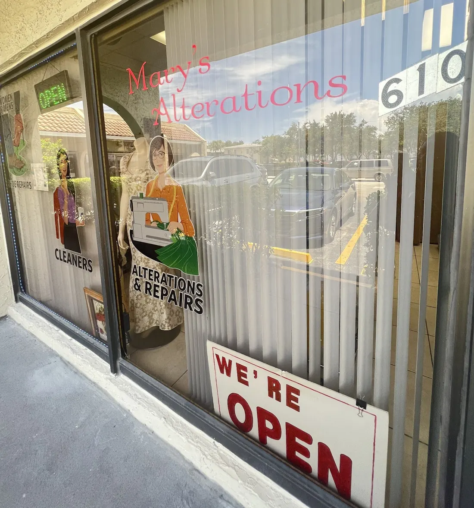
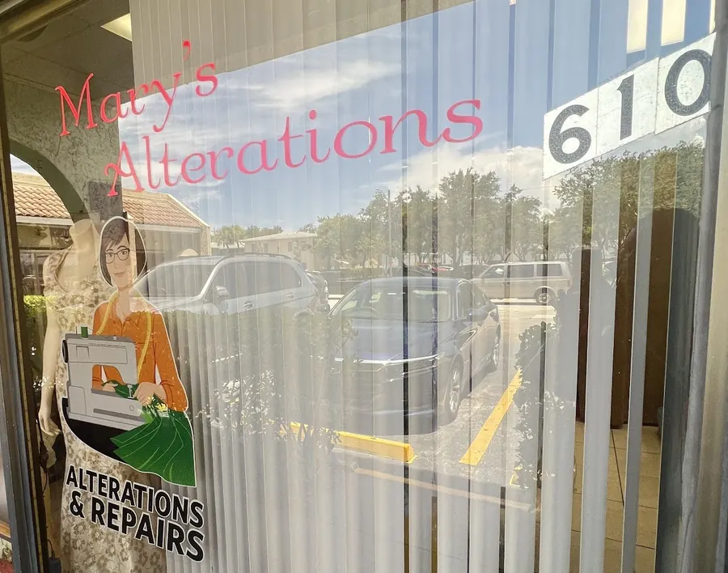

Tue–Fri 9–6 · Sat 9–2
Made to fit,
with a little love.
Alterations, repairs and dry cleaning by Mary and her team on Atlantic Shores Boulevard. Hems, collars, seams, the fixes you’d rather not throw away — back to you fast, at a fair price.
4.7 ★ on Google43 reviewsWomen-owned

Hello, neighbor
“Great people, great service, great work.”
That line from a Google review is the whole shop in six words. Customers talk about walking in and being warmly welcomed, about Mary listening to what they need and suggesting what will make it fit, and about getting their clothes back fast.
One customer brought in a brand-new tee with a hole in the sleeve seam. Mary’s fixed it — and didn’t charge him.
- friendly staff
- fast work
- helpful suggestions
- attention to detail
- kind staff
What Google hears most in Mary’s reviews
Services
Bring it in.
We’ll write you a ticket.
Drawn from the shop’s window and its customers’ own words. Not sure if it can be done? Call and ask Mary.

Kind words
4.7 stars from 43 neighbors
“Love Miss Mary!!!! She is the best Tailor I’ve had and she is so sweet to work with!”
Ellie
“The prices are very fair. The work is great and they get my stuff back to me fast… I called around to other tailors and they wanted to charge me much more.”
David
“Mary and her team are warm, professional, and always go the extra mile to ensure satisfaction.”
Matt
“From the moment I walked in, I felt warmly welcomed by their friendly staff.”
Sandy
“Not only did they [fix it], but they didn’t charge me… Great people, great service, great work.”
William
“They were able to adjust my pieces in a very short time and at a good price!”
Google review
Visit
610 Atlantic Shores Blvd
Hallandale Beach, FL 33009
Tue–Fri 9 AM – 6 PM · Sat 9 AM – 2 PM
| Tuesday | 9 AM – 6 PM |
|---|---|
| Wednesday | 9 AM – 6 PM |
| Thursday | 9 AM – 6 PM |
| Friday | 9 AM – 6 PM |
| Saturday | 9 AM – 2 PM |
| Sunday | Closed |
| Monday | Closed |